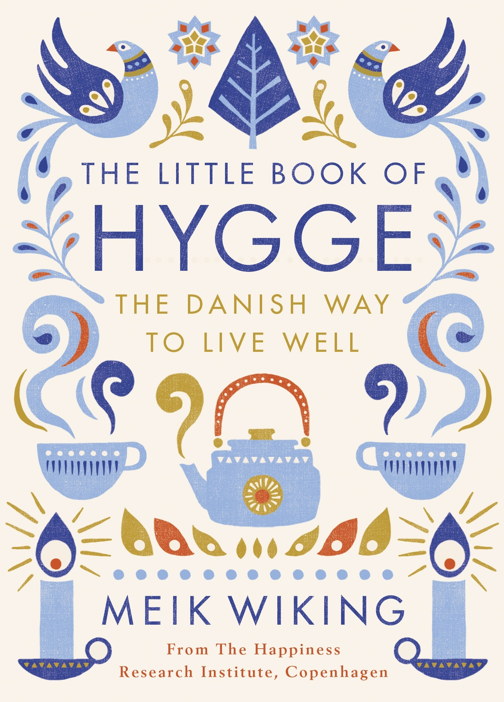

The Little Book of Hygge: The Danish Way to Live Well
- Read on 2023-05-01
- Rating: ️️️️️
- Format: 🎧 (3 hours 13 minutes)
This was/is a book club book for me. The book is very short, but has some practical tips to try to make your life more hyggeligt. I think the book could be an essay instead, and people could still get everything they need to out of it. For any self-help book like this, I'm an advocate of taking what you can out of it, maybe applying something to your life, and see if has any merit. Not enough time has passed to really judge that.
I'll re-listen to this book very soon, as the meeting is coming up, and the book is only a few hours long. In the interim, I need to make myself some cake, buy some candles, and live in the moment. Maybe your life could use some more hygge as well.
- Prior: Surrender
- Next: Last Argument of Kings